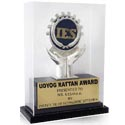
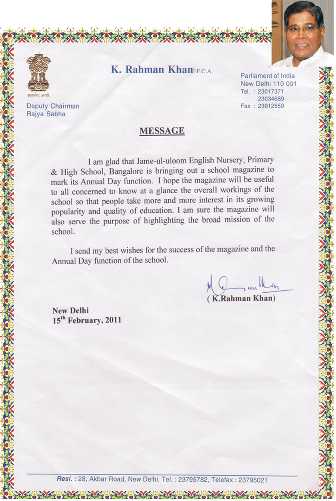
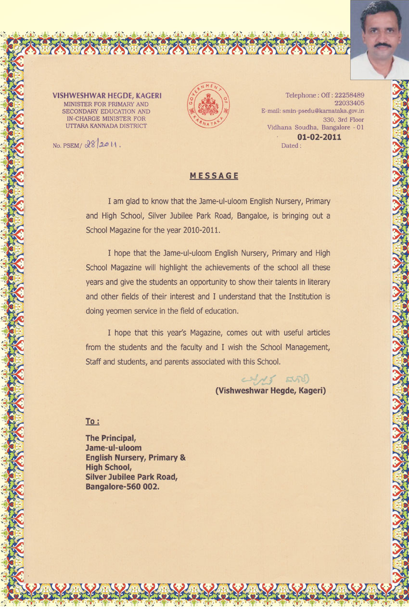
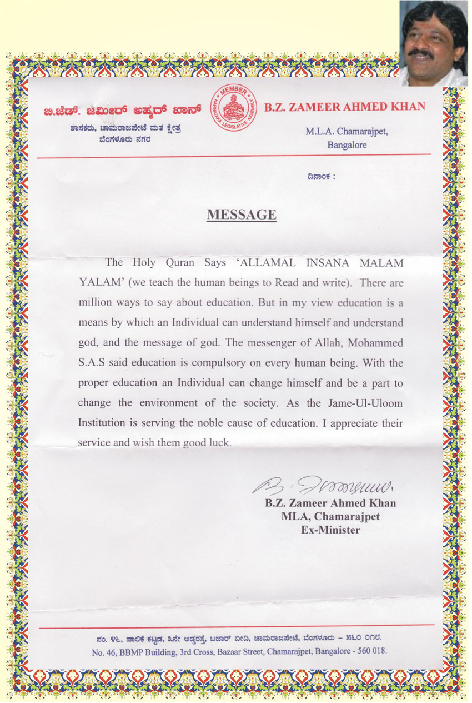
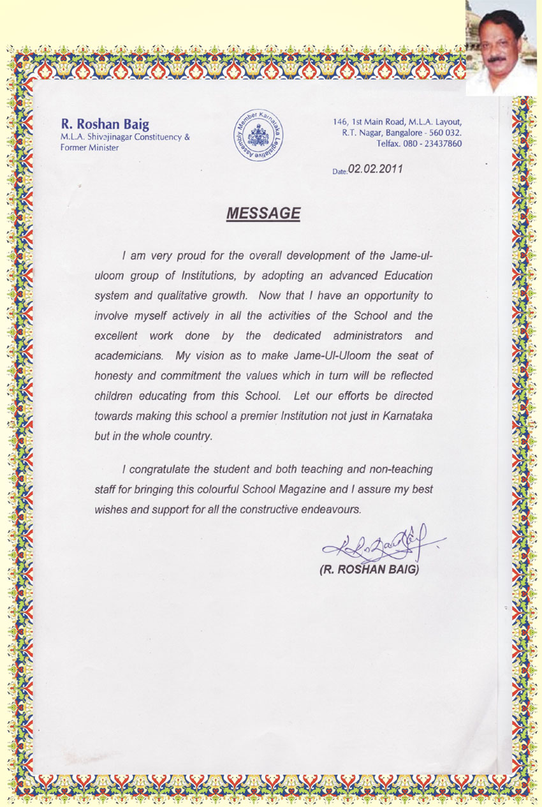
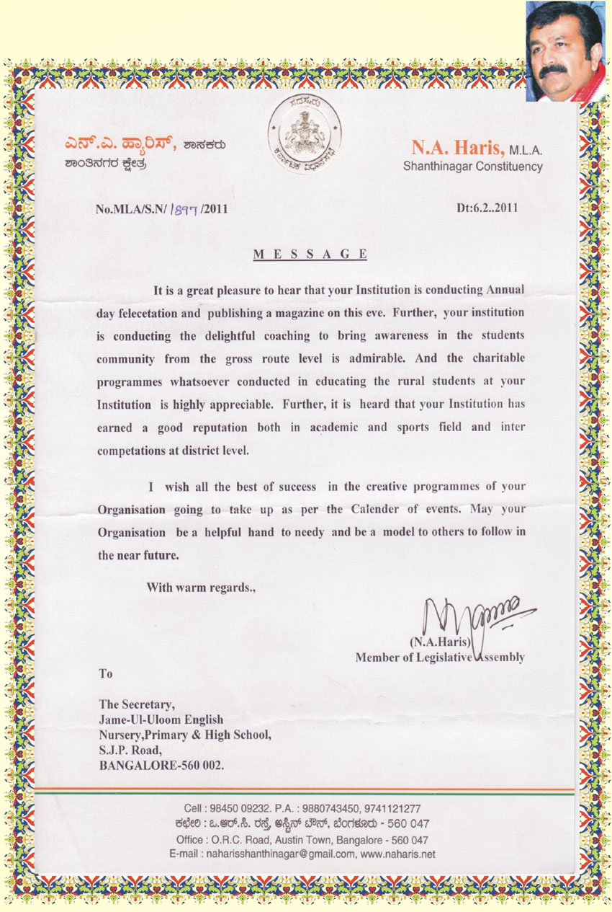
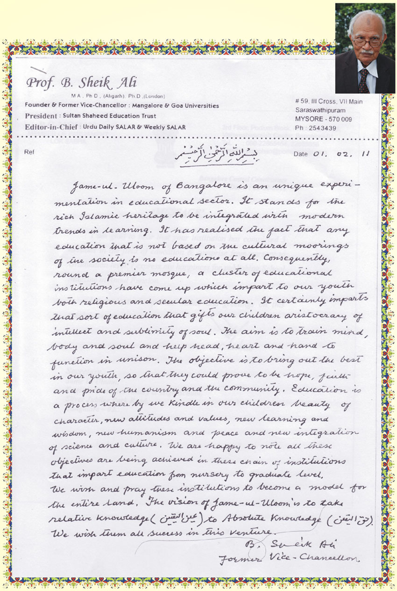
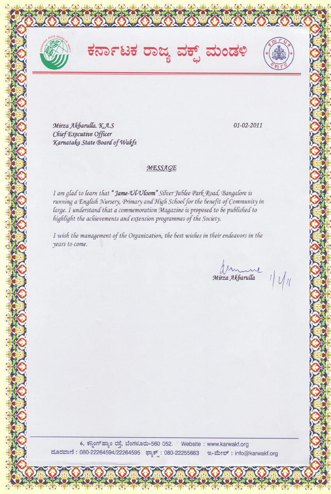
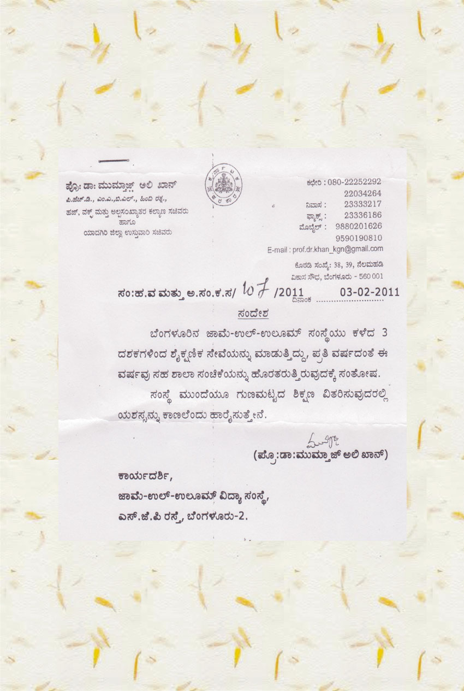

Home / Institution
Awards & Recognition
Recognitions and letters of appreciation received by Jame-ul-Uloom, Jamia Masjid, Bangalore.
This page gathers the Trust’s recognitions. Below are the scanned letters of appreciation. The Admissions Diary also describes an awards function held on 13 December 2012 at Town Hall for meritorious students of the Group of Institutions, with the Governor of Karnataka as Chief Guest; it is recorded in the Admissions Diary.
See also the Banikuppa Residential School awards and competitions and campus photograph gallery.

Gallery
Letters of Appreciation
Messages of goodwill and appreciation received from public figures and educationists, most dated early February 2011. Hover, focus or tap a card for details.

K. Rahman KhanDeputy Chairman, Rajya Sabha15 February 2011View full size 
Vishweshwar Hegde KageriMinister for Primary and Secondary Education, Government of Karnataka1 February 2011View full size 
B.Z. Zameer Ahmed KhanMLA, Chamarajpet, Bangalore · Ex-MinisterView full size 
R. Roshan BaigMLA, Shivajinagar Constituency · Former Minister2 February 2011View full size 
N.A. HarisMLA, Shanthinagar Constituency6 February 2011View full size 
Prof. B. Sheik AliFormer Vice-Chancellor, Mangalore & Goa Universities1 February 2011View full size 
Mirza Akbarulla, K.A.S.Chief Executive Officer, Karnataka State Board of Wakfs1 February 2011View full size 
Prof. Dr. Mumtaz Ali KhanMessage in Kannada · Government of Karnataka3 February 2011View full size